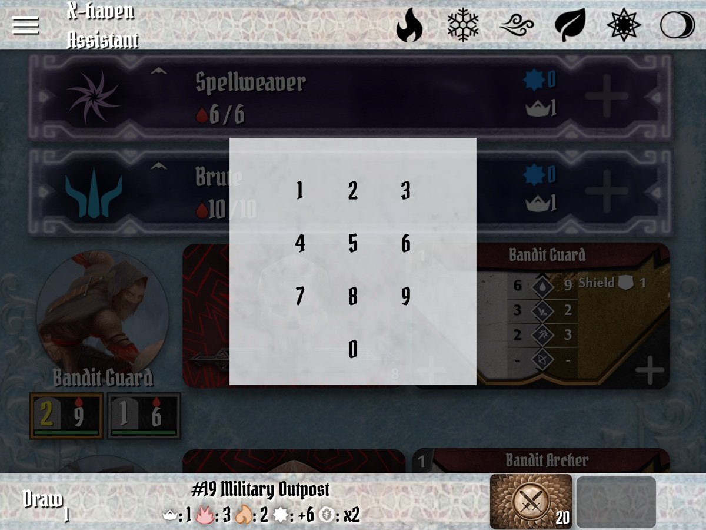

X-Haven Assistant — User Manual
§5A Round, Step by Step
The round structure mirrors the rulebook's: card selection (physical), drawing monster abilities, setting initiative, sorting and acting, ending the round. The app participates in steps 2–5; step 1 stays on the table.
§5.1Card selection (player phase)
Each player chooses two ability cards from their hand and places them face-down. The app does not enforce, track, or even know about the player's hand — card management is purely physical. The app's role begins once the group is ready to draw.
What this means in practice: there is no "submit cards" or "ready" interaction in the app. Just play physically and tap Draw when everyone is ready.
§5.2Drawing monster abilities
Tap the Draw button on the bottom bar (§3.4). The button is implemented by DrawButton in lib/Layout/draw_button.dart.
What happens on Draw:
- Every active monster type's ability deck reveals its top card. The card appears in the monster widget on the main list.
- The round state moves from
chooseInitiativetoplayTurns(visible internally; affects the button's label, see below). - The button's label morphs from Draw to Next Round.
- The round counter on the button face shows the current round number; in scenarios with a fixed round count, it reads as
3(8)meaning round 3 of 8.
If you tap Draw when the round state isn't ready (e.g., already in playTurns), the button's runAction returns a "blocked" message that surfaces as a toast — no state change.
§5.3Setting initiative
Each character's initiative is the lower of their two chosen cards (rules-side). To enter it in the app: tap the empty initiative slot under the character's banner. By default, this brings up your platform's OS numeric keyboard (the regular system keypad — iOS, Android, or desktop, whatever your device provides). Type the two-digit initiative; on the second digit, the field auto-unfocuses and the value is committed (no explicit confirm tap needed).
Opt-in: Soft numpad. If you'd rather have an in-app numpad — useful on platforms where the OS keyboard is slow to surface, or on multi-window desktop layouts where the system IME is intrusive — enable Soft numpad for input in Settings (§11.2). With the toggle on, tapping the initiative slot opens the numpad shown in Figure 5.1 instead of the OS keyboard. The two-digit auto-confirm behavior is the same. The toggle is off by default.

Monster initiatives are not entered manually — they're set automatically from the drawn ability card's printed initiative.
Secret initiative (network play). When connected to a server (§9), client characters' initiatives can be hidden from other clients until the round resolves. The rule has an edge case: modifying an already-entered initiative reveals it to other clients (otherwise mid-round adjustments would leak the value).
§5.4Sorting and acting
Once all figures have an initiative (characters from the numpad, monsters from their drawn cards), the main list reorders by initiative ascending — lowest first. Ties break by figure type per the rulebook; the app respects this automatically.
Reading the list: the topmost figure with no acted indicator is who acts next. As each figure resolves their turn, tap their banner's banner-icon corner — the icon shifts to acted state, and the next figure is highlighted as up next.
Manual reorder. For ties or scenario-specific overrides, long-press a banner and drag to a new position. This bypasses initiative ordering and is local to the current round only — the next round's draw resets the order.
§5.5During a turn
The app's job during a turn is to track HP, conditions, XP, and summons. Everything else (movement, attacks, line-of-sight, range) stays on the table.
Character widget
The character banner (CharacterWidget, lib/Layout/CharacterWidget/) exposes:
- HP control — tap to subtract one (most common), long-press to open a numpad for direct entry. Healing: add via the same control.
- Conditions row — tap a condition icon to toggle. Conditions render as small round tokens under HP; the icon set is the rulebook's. See §3.7 for the glyph vocabulary.
- XP counter — small star widget. Tap to increment.
- Summons (
+) — adds a summon figure tracked under the character. Summons get their own HP / conditions / initiative. - Acted indicator — small banner-icon in the corner; tap when the character finishes acting.
Monster standee menu
Each monster standee on the monster widget is its own tappable target. Tapping a standee opens its status menu with HP control, conditions, and a level pip. Promotion (e.g., from normal to elite mid-scenario) happens here — though the rules rarely call for it.
If a monster's HP reaches 0, the standee is automatically removed from the list. The character equivalent (HP 0) leaves the banner in the list as exhausted — physically you remove the character from the table, but the banner stays so the app retains the position for end-of-scenario XP/coin computation.
§5.6Modifier decks (AMD)
Each monster faction has its own attack modifier deck. Each character also has their own. The app tracks all of them.
- Monster AMD — single deck shared by all monsters and bosses (per rulebook). Visible on the bottom bar (§3.4) and inline above the bottom bar.
- Character AMDs — one per character, with their personally-purchased perks applied. Visible above each character's banner area on screens wide enough to fit, or accessible via the character widget.
- Allies AMD — appears when at least one allied figure is present (see §4.3 Add as Ally). Its visibility is also toggleable from the sidebar drawer.
Drawing. Tap the deck to draw the next card. The drawn card persists until the figure's turn ends; tap the deck again to advance. Special cards (Curse, Bless, +2/Stun, etc.) have their effects applied automatically when drawn — Bless/Curse are removed from the deck after one use; +2/anything resolves as the modifier plus the named condition. Rolling cards (the rolling-modifier symbol) chain visually as a small stack.
Discard / shuffle. Cards drawn during a round stay in the discard pile. At the end of the round the deck doesn't shuffle automatically — only specific cards (the shuffle-trigger card, or special abilities) cause a shuffle. The app handles all of this automatically.
Advantage / disadvantage. Long-press the deck to draw two cards instead of one; the rules-relevant one (per advantage/disadvantage) is highlighted. Single-tap dismisses both.
Perks. Configured in the perks menu off the character widget. Each perk you check applies its modification to the AMD: removing −1s, replacing −2s with rolling cards, adding +2 Wound, etc. Perks persist with the character via the character save/load system (§4.1).
§5.7Elements
See §3.2 for the visual states. During a round, elements move through their lifecycle automatically:
- Tap an inert element → full.
- Tap a full element → inert (a "use" — typically when an ability consumes the element).
- Long-press an inert element → waning (rare; for scenario-start element conditions).
- At round end (when Next Round is tapped, see §5.8), the cycle decays: full → waning → inert.
The Elementalist class (Gloomhaven 2E) has perks that change the decay behavior — the app handles this automatically when an Elementalist is in the party with the relevant perk checked.
§5.8Ending a turn / round
A turn ends when the figure has resolved their action and you've tapped the acted indicator on their banner. The round ends when every figure has acted.
To advance to the next round, tap the (now-relabelled) Next Round button on the bottom bar. What happens:
- Round counter increments.
- Element states decay one step.
- Auto-expire conditions decrement (Wound deals damage; Poison stays through draws but expires per rules; Stun/Disarm/Immobilize/Muddle expire at round end if Auto-expire conditions is enabled in settings).
- Acted indicators reset; banners go back to "ready to act."
- Draws are not automatic — you tap Draw again to start the next round (so the button morphs back to Draw).
commandIndex dedup at server.dart:64–94 (updateStateFromMessage). Note that the wire format is now a JSON envelope ({"i":N,"d":"…","e":{…},"s":"…"}) since commit f193068c; the older text-delimited framing remains as a legacy-compat fallback.